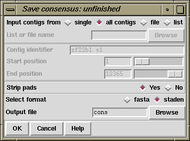

This option is available from the gap4 File menu. An "Unfinished" consensus is one in which any position where the consensus does not have good data for both strands is written using A,C,G,T characters, and the rest (which has good data for both strands) is written using a different set of symbols (d,e,f,i). This sequence can be used for screening against new readings: only the regions needing more readings will produce matches. By screening readings in this way, prior to assembly, users can avoid entering readings which will not help finish the project, and which may require further editing to be performed. This type of consensus when written in staden format, consists of A,C,G,T for single stranded regions and d,e,f,i for finished sequence (d=a,e=c,f=g,i=t).
The currently active consensus algorithm is selected from the "Consensus algorithm" dialogue in the main gap4 Options menu (see section Consensus Algorithm).
Contigs can be selected from a file of file names or a list, and output can be in fasta or staden formats.

The contigs for which to calculate a consensus can be a particular "single" contig, "all contigs", or a subset of contigs whose names are stored in a "file" or a "list". If a file or list is selected the browse button will be activated, and if it is clicked, an appropriate browser will be invoked. If the user selects "single" then the dialogue for choosing the contig and the section to process becomes active.
The "strip pads" option will remove pads ("*"s) from the consensus sequence.
The routine can write its consensus sequence in "fasta" and "staden" formats. The output file can be chosen with the aid of a file browser.